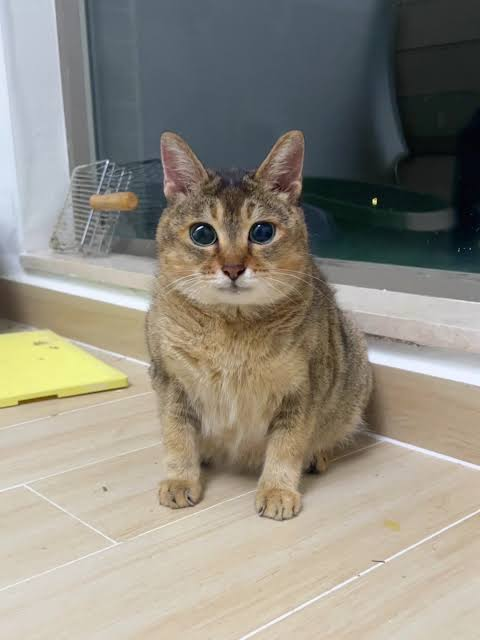
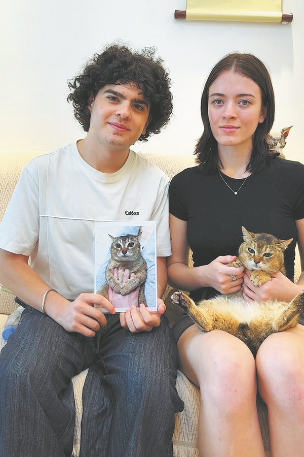

About Mei Mei
| Name | Mei Mei (or Mei Jie) (Chinese: 眉眉; full name: 陈眉庄, Chen Meizhuang), also known as Tole Tole or Vro |
| Owner(s) | Chen Jianye, and another owner that seems to be Chen's partner. |
| Home | China (Guangzhou) |
| Sex | Female |
| Breed | Domestic cat, mostly unknown but widely speculated to be a "Chinese bird cat", "Japanese bobtail", or a "Abyssinian". |
| Birthday | Unknown |
About her and her story
Mei Mei, also known online as Tole Tole or Vro, is a rescued female domestic cat from Guangzhou, China. She is a small brown domestic cat with large eyes and no teeth. She was born with a short, kinked "qilin" tail (a congenital bobtail) and lost her teeth during her years on the street; a veterinary checkup after her rescue found only broken tooth fragments remaining.
Mei Mei spent at least 7 years (most of her life) as a stray in Guangzhou. In June 2022, she was found near Guangzhou Railway Station while pregnant and taken in by Guangzhou resident Chen Jianye, a former e-commerce worker who rescues and rehomes stray animals and although he usually found homes for them, he decided to keep Mei Mei, along with his other cat named Tang Tang which is also shown in his videos.

On her first veterinary checkup form, Chen wrote her name down as "Xiao Huoche" ("Little Train") because she had been found by the train station. After viewers then commented that her expression resembled Shen Meizhuang, a character in the historical drama "Expresses in the palace", Chen added his surname and named her Chen Meizhuang, shortened to Mei Mei or Mei Jie.
How she became famous
Mei Mei gained a following on Chinese social media platforms such as Douyin and Xiaohongshu under Chen's accounts "奥斯卡和糖糖姐" (Oscar and Tangtang Jie) and "土拨猫陈眉庄" (Tubomao Chen Meizhuang). Her international popularity began on December 18, 2023, when TikTok user @rydrayn posted a clip of Mei Mei being held while a Japanese audio line from the Sanrio character Cinnamoroll played. Within just three months, the video reached over 35 millions views and 5.5 million likes. English-speaking viewers mispelled the Japanese phrase "dore dore" ("let's see") heard in the video as "tole tole", ultimately giving her the nickname "Tole Tole".
Nowadays, international fans come over to Guangzhou to meet her in person. The first overseas visitor, a fan from Chile named Felipe, arrived in June 2026, followed by visitors from more than 20 countries and regions, including the United Kingdom, Romania, Morocco, the Netherlands, Poland, the United States, and others. Chen prepares small keepsakes, such as cushions and photographs themed around Mei Mei, for guests who visit.

Controversies
Speculations and allegations of Mei Mei being abused circulated online as viewers noticed her short tail and missing teeth. In late 2025, overseas viewers on Xiaohongshu and Tiktok began a "Save Mei Mei" campaign from this. However, Chen spent nearly six months responding to comments concerned for her safety and explaining that her condition dated from her time as a stray and possibly being abused by past owners.
The song (Across the Sea by hadashi, a cover of Across The Sea by Weezer) usually associated and played in videos showing Mei Mei has also gathered some controversy on the song's meaning. Its suggestive lyrics ("18 year old girl") ("wonder how you touch yourself") sparked some people saying that this song should not be used to represent Mei Mei, even though the original song by Weezer also has the same lyrics. Some people even speculated that the song was a child predator's view on life, mistaking "18 year old girl" as "13 year old girl" either as a mistake or to gather attention.
People have expressed concern for how Mei Mei's owners have seemingly used Mei Mei for their own benefit, such as selling a bunch of merch and advertising it to the community, and reposted prank clips from Chen's account, such as pretending to cut open a snack with a kitchen knife or shining a phone flashlight at her, circulated abroad without subtitles or context and fueled the accusations. People have also expressed disgust on how in one of the videos that advertises the merch, Mei Mei's fur is seemingly cut by a small amount and put into a capsule to be sold, but it is unconfirmed if this capsule is actually going to be on sale or not.
Sources
https://www.thestar.com.my/aseanplus/aseanplus-news/2026/10/13/indifferent-cat-meimei-becomes-guangzhou-ambassador https://sillycat.wiki/Mei_Mei https://www.reddit.com/r/cats/comments/1afmp1c/what_breed_is_this_cat/ https://www.chinadaily.com.cn/a/202610/13/WS6acd5ce8e4b06d4aa0562614.html